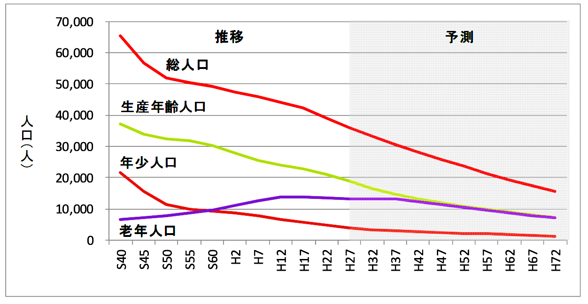

一人ひとりが暮らしやすいまちを目指して、
行政と市民が連携し、人材とプロジェクトを育て、
次世代に向けた地域変革を生み出すプロジェクトです。
南九州市が直面している3つの現実。
人口減少に伴い、色んなサービスが縮小・終了する恐れがある。
国際情勢・経済・AIなど、急速に変化する社会に対応できていない現状がある。
地域課題が山積するなか、みんなで取り組む共通の仕組みが求められている。
南九州市の人口は急速に減少しており、今後30年でほぼ半減する見込みです。

出典：南九州市人口ビジョン（2024年実績 住民基本台帳）
今までバランスが取れていたのが逆転していく！
さまざまな分野で「需要」と「供給」の逆転が起きています。
自分たちの未来は自分たちでつくる。
現状と想定される未来をしっかり見つめて、あらゆる可能性を探る。
市民も行政職員も地域全体で、理想の未来に向けた一歩を踏み出す。
行政の既定路線思考・市民の行政依存という慣習を打破し、挑戦と応援の文化をつくる。
行政・市民・事業者・関係人口が連携し、地域変革のエコシステムをつくります。
アイデアを形にして挑戦する ／ スキルアップ・連携強化により地域課題を解決する
まちへの想いを形に
応援・支援する風土としくみをつくる
地域産業の担い手として
まちに関わる人を増やす・深める
知見と技術で変革を支援
官民の相乗作用によるイノベーションが連鎖するまちをつくる
ターゲットごとにアプローチし、地域変革に向けた人材の発掘・育成、 関係人口の拡大と深化、応援・支援しあう環境づくりを進めます。
市民が理想の未来に向けて実践し、応援・協力の文化を育む実践者の養成。
エビデンスに基づく本質的な課題解決と政策立案のための人材・プロジェクトの育成。
地域や企業の担い手を地域外から獲得するためのプロモーション及びマッチング。
地域の変革が持続的に生まれるための投資文化醸成と資金調達プログラム。
滞在 × 仕事 × 交流で生まれる地域産業支援モデル。来た人が「住みたい」と思えるまちへ。
介護人材 × 教育 × 関係人口創出で、地域ケア構築モデルをつくる。
「地域変革クリエイター」育成と文化観光エコシステムの構築。知覧の歴史をこれからの力に変える。
市民の創造力 × 公共空間で、公園の価値創造モデルをつくる。
2026〜2028年度にかけて、以下の目標達成を目指します。
挑戦と応援が循環する地域イノベーションの創出を目指して。